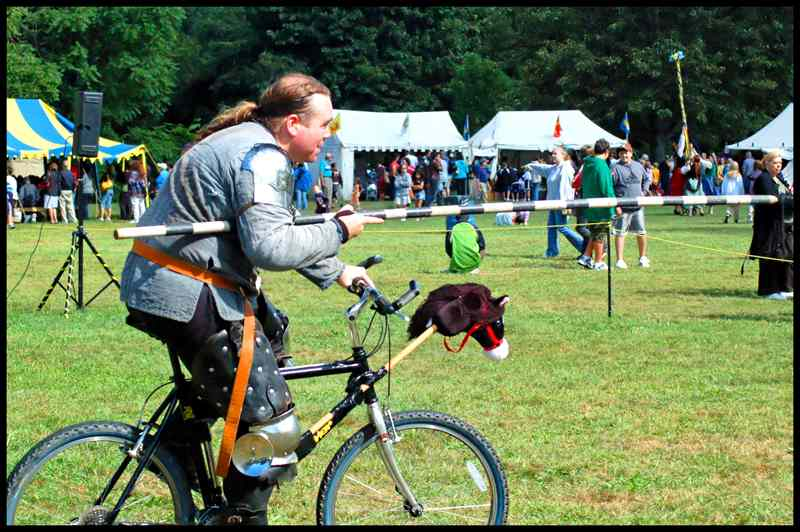

Everyday Systems: Podcast : Episode 39
Lawful Good Biker
Hi, this is Reinhard from everyday systems.com
Today I'm going to talk about a system called Lawful Good Biker.
It's a sub-sub systems of Urban Ranger.
To speak like a computer programmer for a minute, The Inheritance hierarchy is: Lawful Good Biker implements Bike Ranger implements Urban Ranger
I have to warn you, this system may seem a little more shocking and outlandish at first than most of my others, but please hear me out, it really does make a lot of sense, I think, if you consider it carefully.
Here's the system: when you do your purposeful, locomotive biking OBEY ALL TRAFFIC RULES -- INCLUDING TRAFFIC LIGHTS.
I know, I know, that was worse than you were expecting, but again, please let me explain.
Most bikers, I realize, are chaotic good (or at least chaotic something).
I mean, biking is good for your health, and good for the environment, and bikers tend to be very cognizant of these facts (maybe a little too cognizant). So they're good. Or at least, they like to think of themselves as good.
But they are (at least here in the U.S.) free spirits who do not like to be constrained by the laws of mortal men.
This latter bit occasionally leads to horrific accidents and (more frequently) ill will towards bikers and biking -- even, alas, the charge of hypocrisy.
I mean, how can you preach to SUV drivers about their wicked ways when you can't even be bothered to respect a stop sign?
The solution? Change your biker-alignment to Lawful Good. Be flamboyantly, comically observant of traffic rules. You will get some funny looks from fellow bikers as they zip past you at stop lights, but far fewer shouts of hatred, obscene gestures, and hundred kilojoule impacts.
I know, it's tremendously counter intuitive, standing there waiting for light to turn green. I understand. I'm from Manhattan, the jaywalking capital of the world. You feel like a sucker. Or a tourist. And in any case, time's a wasting.
The way I reconcile myself to this inefficiency is by having my voice recorder on hand to babble into. And doing this actually remedies one of the great deficiencies of Bike Ranger compared to vanilla urban Foot Ranger -- that I can't practice audiodidact while doing it.
If you're not a practitioner of audiodadact, just take the opportunity to reflect on the physical traffic light as a symbol of the habit traffic light. I mean, if you can't respect an actual traffic light, how are you ever going to get anywhere with the habitcal, right? :-)
If you have no idea what audio didact is, the very short version is that it's keeping an audio journal. But there's a bit more to it, so if this sounds at all intriguing, listen to the 2 audiodidact podcast segments I did on this system ages ago. You can find links to them on the everyday systems podcast home page. everydaysystems.com/podcast
When you're Lawful Good, you can be self-righteous about biking without the slightest pang of conscience. Or even better, perhaps, your comically strict observance of the law and traffic light meditations will develop your sense of humor to the point where you can lighten up about the whole issue and realize that the best way to make converts to the Way of the Bike is not to bludgeon them over the head with your superiority.
Credits: I got the basic idea of obeying traffic rules from a friend and former coworker who would probably rather not be identified here, but he knows who he is -- he’s also the only person I know who owns a medeiveal pole arm and a custom made suit of chain mail armor -- so the dungeons and dragons angle is, in part, a sort of tribute to him. And then I also read something remarkably similar in a recent edition of the New Yorker. I'll look it up and put a link on the transcript. The name, of course, is inspired by the seminal 1977 work of E. Gary Gygax.
Disclaimer: I'm not yet, alas, a Lawful Good walker yet, and may never be. In this regard, my new york city nurture far outweighs my teutonic nature. Once when my dad and I were in Germany, jaywalking as usual, someone shouted out "child murderers!", an incident which, despite having two children now myself, I'm still unable not to find amusing. Oh well. The hobgoblin of little minds and all that.
Thanks for listening.
© 2002-2025 Everyday Systems LLC, All Rights Reserved.